Software Engineering
Use Case DesignAgenda
- Design a Use Case
- Use Case Realization-Design
- Interaction Diagrams in Design
- Modeling Concurrency
- Subsystem Interactions
Design a Use Case
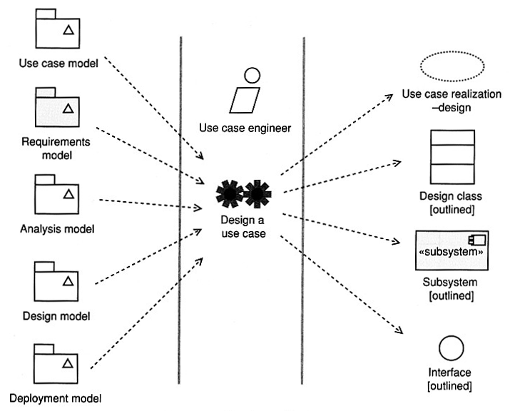
- "Use case-realization-design" are collaborations of design
objects and design classes that realize a use case.
- Use case realization in design will involve design classes, interfaces,
and components rather than analysis classes.
- The process of creation of use case realizations in design is likely to
uncover new non-functional requirements and new design classes.
- Use case realization-design help you find central mechanisms (e.g.,
database management) that are applied consistently throughout the system
development.
Interaction Diagrams in Design
In design you may
- refine key analysis interaction diagrams, or
- create new ones to illustrate central mechanisms such as object
persistence.
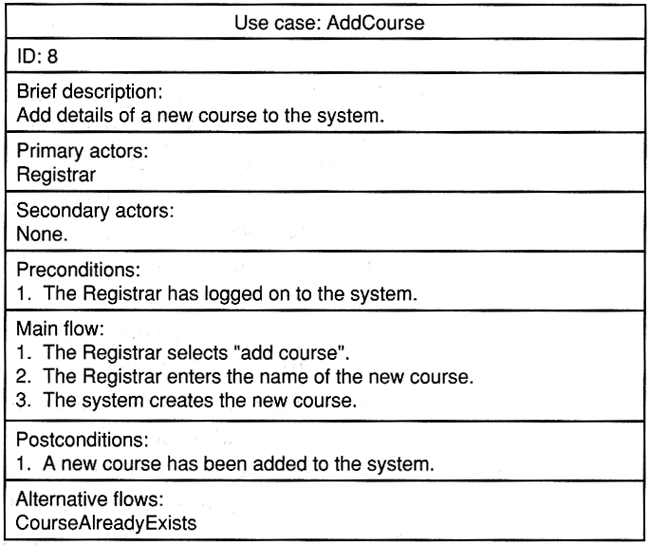
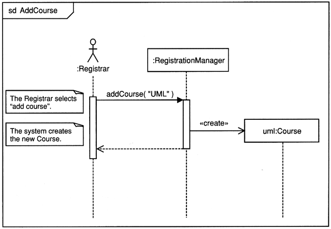
The analysis interaction diagram.
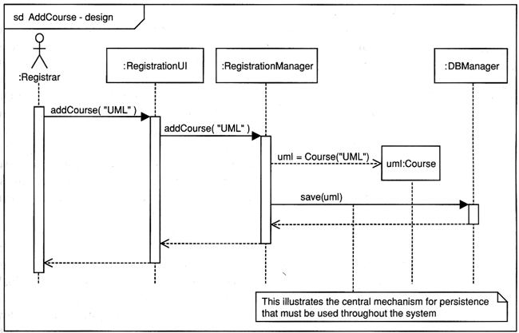
A typical sequence diagram for AddCourse use case in the early stage of
design
- GUI (not modeled very deeply yet)
- operations specified to be implemented, explicit constructor
- persistence - central mechanism for the whole application
Application Functional Components
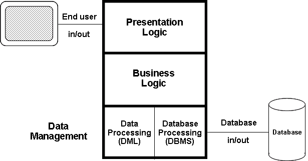Application Distribution Points?
Distribution Points
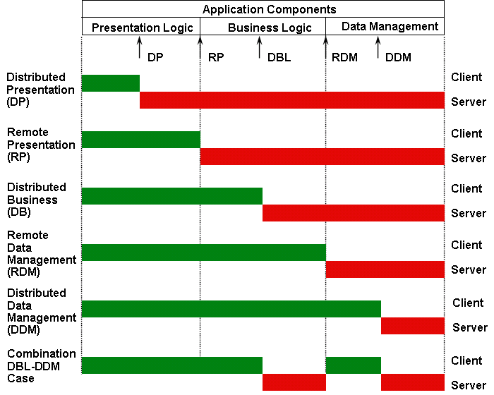
Software Architectural Patterns
- Data Flow Systems
- Batch Sequential
- Pipes and Filters
- Call and Return Systems
- Main Program and Subroutines
- Object-Oriented Systems
- Hierarchical Layers
- Independent Components
- Communicating Processes (C/S)
- Event Systems
- Service-oriented
- P2P
- Data-Centered System
- Transactional Database Systems (Repository)
- Blackboards
- Space-based (Tuple Spaces, JavaSpaces)
- Virtual Machines
- Rule-Based Systems
- Interpreters
- JITs
- Adaptive (HotSpot)
Distributed Architecture Rules
- cooperative distributed processing - distributed data, transaction, and
workflow management
- fine granularity security
- local autonomy
- no reliance on central site
- continuous operation
- location transparency and location independence
- fragmentation independence
- replication independence
- distributed query processing
- hardware independence
- operating system independence
- network independence
- DBMS independence
- wrappers for existing applications
- simple is beautiful - object technology (cohesive components and loosely
coupled)
Architecture and Reuse
What Kinds of Architectures Best Support Reuse?
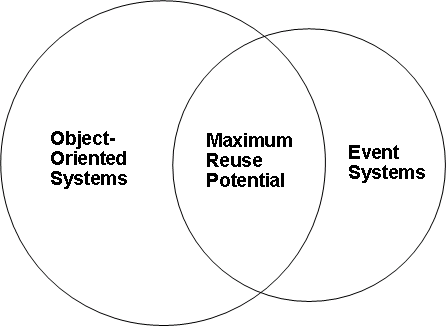
Modeling Concurrency
Concurrency is one of the key consideration is design.
Concurrency support in UML 2
- active classes
- forks and joins in activity diagrams
- the
par operation in sequence diagrams
- sequence numbers prefixes in communication diagram
- multiple traces in timing diagrams
- orthogonal composite states in state machines
Active classes
- Concurrency - each active object has its own thread.
- Active classes have instances that are active objects.
- Active objects and active classes are drawn as normal classes and
objects but with double right and left borders as illustrated below.
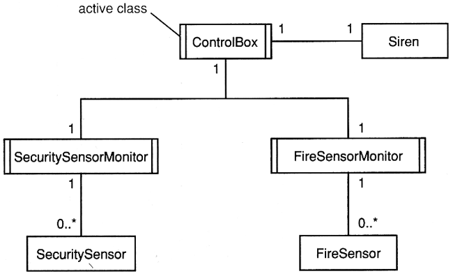
Concurrency in sequence diagrams
- Combined fragments divide a sequence diagram into different areas with
different behavior.
par (parallel) - all operands execute in parallel.- The diagram below demonstrates the use of the
par, loop,
critical, and opt operators.
The critical operand executes atomically without interruption.
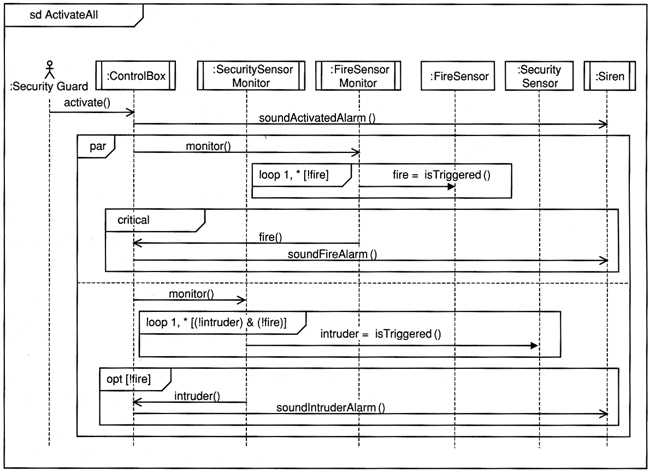
Concurrency in communication diagrams
Postfix the sequence number with a label to show different threads of
control.
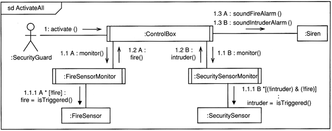
Subsystem Interactions
Subsystem interactions diagrams can show the interactions between parts
of the system.
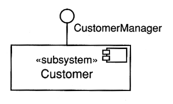
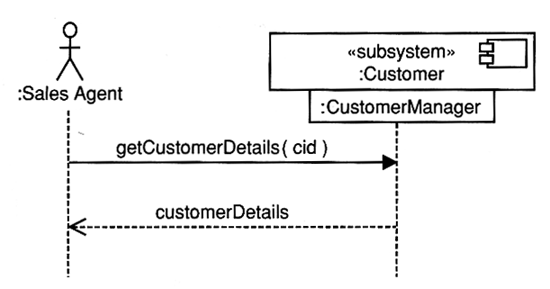
The interface CustomerManager is hanging below the subsystem.